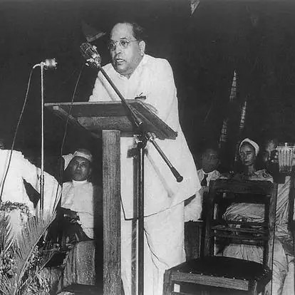
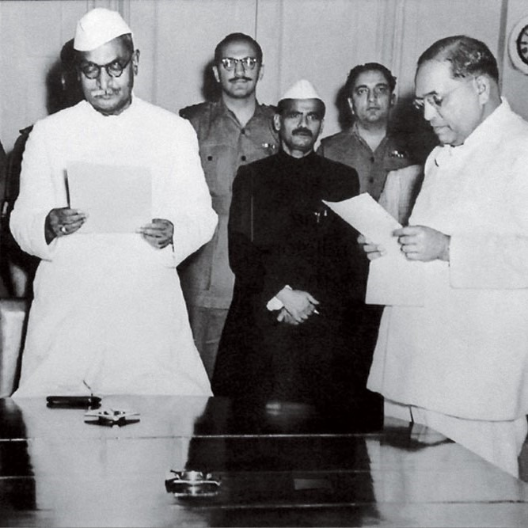

Dr. BR
Ambedkar
Bhimrao Ramji Ambedkar BR (14 April 1891 - 6 December 1956) was an Indian jurist,
economist, social reformer and political leader who headed the committee drafting
the Constitution of India from the Constituent Assembly debates, served as
Law and Justice ministerin the first cabinet of Jawaharlal Nehru, and inspired the
Dalit Buddhist movement after renouncing Hinduism.After graduating from Elphinstone College,
University of Bombay, Ambedkar studied economics at Columbia University and the
London School of Economics, receivingdoctorates in 1927 and 1923, respectively,
and was amonga handful of Indian students to have done so at either institution
in the 1920s.[13] He also trained in the law at Gray's Inn, London. In his early career,
he was an economist, professor,and lawyer. His later life was marked by his political activities;
he became involved in campaigning and negotiations for partition, publishing journals, advocating political rights for Dalits, and contributing to the establishment of the state of India. In 1956, he converted to Buddhism, initiating mass conversions of Dalits.

Dr. Ambedkar, The Father of Indian Constitution
On August 29, 1947, Ambedkar was appointed along with seven other members to draft an independent Indian Constitution. Dr. B.R. Ambedkar was appointed as the chairman of the drafting committee. The constitution of Ambedkar guarantees and protection for a wide range of civil liberties for individual citizens, including religious freedom, the abolition of untouchables, and the prohibition of all forms of discrimination. Ambedkar can certainly be regarded as the “chief architect of the Indian Constitution” due to his many outstanding contributions. His efforts to eradicate social illness are remarkable, which is why he is dubbed and oppressed as the “messiah” of the Indian Dalits.
Baba Saheb's fight against Caste Discrimination
In 1952, Mother Teresa opened her first hospice for the sick, destitute and the dying in Kalighat, Kolkata with help from Indian officials. She did so by seeking permission to use an old abandoned Hindu temple to the goddess Kali. Known as the Kalighat Home for the Dying, the hospice provided medical attention to those in need and it gave people the opportunity to die with dignity in accordance with their faith. In the words of Mother Teresa, it was “for people who lived like animals to die like angels — loved and wanted”.

Dr. Ambedkar worked to empower Women
He has a strong belief in equality, and a strong support for women’s rights, and has enabled women to be educated, has the right to vote, gets married, and become independent. He understood the importance of maternity benefits in mainstream India in the 1920s and fought hard for them. He promoted social equality and fraternity. He fought vigorously for women’s rights and made tireless efforts to achieve them all. He recognized gender inequality in Indian society and raised his voice to include them in modern society. Dr. Ambedkar has given women the same status as men by enacting many provisions in the Indian Constitution to enhance and empower women



.svg.png)